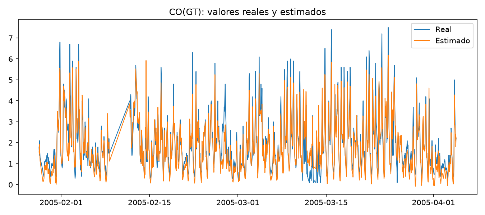
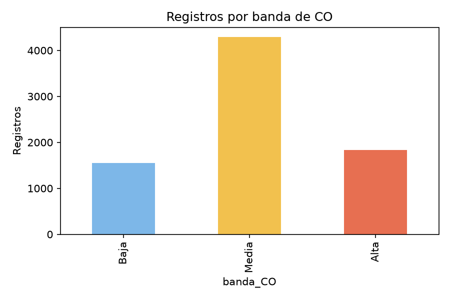
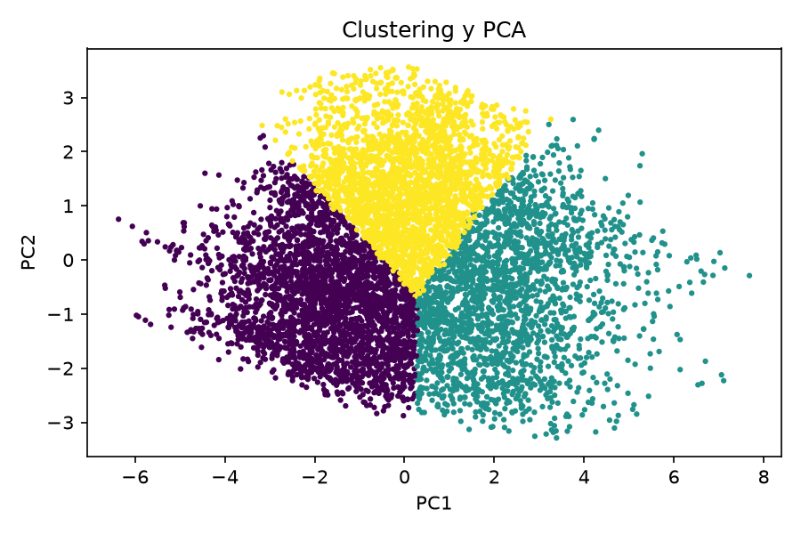

¿Qué se hizo?
El programa revisó los sensores, la temperatura y la humedad para estimar cuánto monóxido de carbono había. Después separó los registros en niveles bajo, medio y alto y buscó grupos de comportamientos parecidos.
El programa revisó los sensores, la temperatura y la humedad para estimar cuánto monóxido de carbono había. Después separó los registros en niveles bajo, medio y alto y buscó grupos de comportamientos parecidos.
Resultados principales
Registros analizados
7,344
Qué tan cercana fue la estimación (R²)
0.862
Clasificaciones correctas
86.5%
Grupos encontrados
3
Regresión explicada fácil
La regresión intenta calcular el valor de CO(GT) usando los sensores y el ambiente. El valor R² de 0.862 indica que, en esta prueba, las estimaciones estuvieron relativamente cerca de las mediciones reales.
| Modelo | Error promedio | Resultado |
|---|---|---|
| Regresión lineal | 0.344 | Mejor resultado |
| Bosque aleatorio | 0.370 | Resultado de comparación |
Clasificación por niveles
Se dividió la concentración de CO en tres grupos académicos. Estos grupos no son una escala médica ni una alerta sanitaria.
| Nivel | Regla | Registros |
|---|---|---|
| Bajo | CO menor que 1 | 1,556 |
| Medio | De 1 a menor que 3 | 4,289 |
| Alto | 3 o más | 1,829 |
Gráficas del avance



Conclusión preliminar
Los sensores y las condiciones ambientales sí contienen información útil para estimar CO en este conjunto de datos. El análisis todavía es un avance: falta revisar con mayor detalle la calidad de los datos, comparar más configuraciones y explicar las limitaciones.